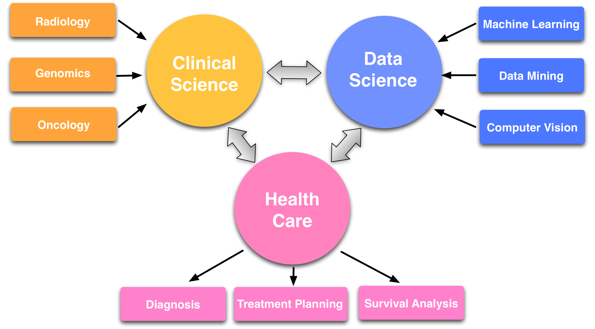
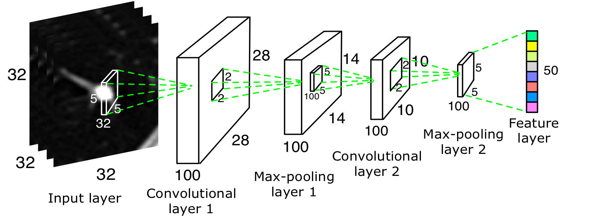
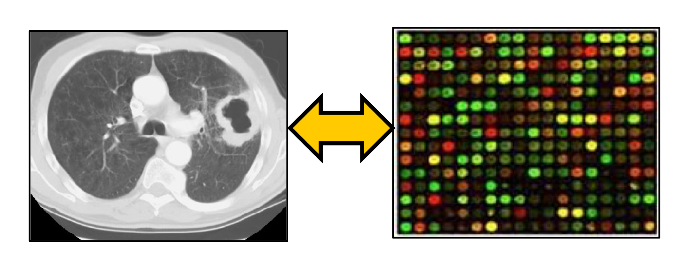
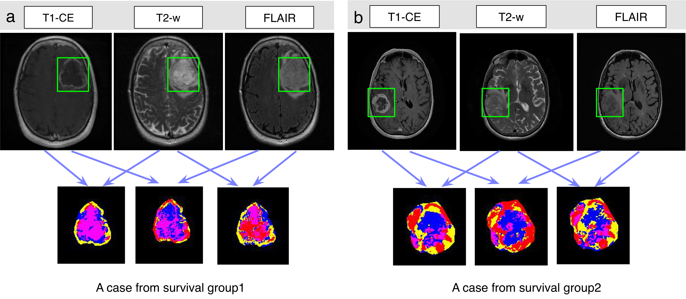

Contact:
Mu Zhou, Ph.D.
Stanford Center for Biomedical Informatics Research
Stanford University
1265 Welch Rd
Stanford, CA 94305-5479
Email:
muzhou1 AT stanford.edu
Dr. Mu Zhou is currently a research scientist at Artificial Intelligence in Medicine and Imaging (AIMI) center, Stanford University. He was a postdoctoral fellow at Stanford Center for Biomedical Informatics Research. His research interests span the fields of deep learning, medical image analysis, and clinical informatics. He designs and implements approaches to mine quantitative information from the emerging "Big Health Data". The findings will enable early detection of disease, outcome prediction, and medical decision support. In particular, he works with Olivier Gevaert and Sandy Napel at Department of Radiology, Stanford to develop computational models that integrate clinical imaging, high-throughput 'omic' data, and clinical information, allowing identification of novel biomarkers to improve diagnostic precision and optimize therapy management for cancer patients. He has also expanded research scope into pediatric neuro-oncology by collobrating with Kristen Yeom at Lucile Packard Children's Hospital Stanford. For more details, please refer to his research and publications.
He earned the Ph.D. degree in Computer Science and Engineering from University of South Florida, 2015, advised by professors Lawrence Hall and Dmitry Goldgof.
He has also been advised by Robert Gatenby and Robert Gillies at H.Lee Moffitt Cancer Research Institute, Tampa, Florida, where he led the development of clinical imaging analysis in brain cancer with emphasis on characterizing tumor imaging information for accurate diagnosis, disease subtype classification, and tailed planning of treatment.
News:
• [2018.6] I will serve as a Program Committee (PC) member of The Thirty-Third AAAI Conference on Artificial Intelligence. Hawaii, USA.
• [2018.3] Our study is highlighted on the cover page of American Journal of Neuroradiology.
• [2018.2] Honored to receive the Philips Healthcare Fellowship to advance my research in imaging informatics.
• [2017.11] Received a research award of $45k credits from Amazon Web Service (AWS) to empower research in deep learning and healthcare.
• [2017.5] Our venture of intellgient diagnosis using medical imaging is on the finalist (Top10) in medicine, BASES Startup Competition, Stanford, 2017!
• [2017.5] Invited talk on deep learning for cancer image analysis, GPU Techonology Conference (GTC), San Jose.
• [2017.3] Our work on lung cancer deep learning is featured in Annual Review of Biomedical Engineering (IF=10.5)
• [2017.3] Our study linking imaging and genomics has been accepted by Radiology (impact factor 6.79)
• [2016.9] I visited Peking University, Tsinghua University, and Chinese Academy of Sciences, Sep-Oct.
• [2016.5] Our study on deep learning for lung cancer detection was accepted at Medical Image Computing and Computer Assisted Interventions (MICCAI) Conference, 2016!
• [2014.10] I gave a talk on quantitative brain tumor diagnosis at Radiomics workshop, MD Anderson Cancer Center, Houston.
• [2014.4] Invited talk on quantitative cancer imaging at Cedars Sinai Medical Center, LA, 2014.
• [2014.2] I won a student travel grant for the Workshop on Translating Cancer Data and Models to Clinical Practice at UCLA, Feb, 2014.
• [2013] Our work on quantitative image analysis won the Young Investigator Award at Society of Skeletal Radiology Annual Meeting.
Research overview
My current research is focused on medical imaging analysis and machine learning (deep learning) for accurate diagnosis, tailored planning of treatment, and precise prediction of outcomes. The findings provide rapid decision support for clinicians to improve diagnostic accuracy for patients at various stages. I also develop multi-scale biomedical data integration of medical imaging, genomics, and clinical records to advance our understanding of cancer risks. In particular, I study RNA-sequencing data analysis and apply bioinformatics approaches that lead to novel biomarkers with actionable insights for early lung cancer diagnosis and prognosis.
Throughout my ongoing studies, I have broad research interests linking data science and clinical insights with emphasis on addressing two important questions: How do we integrate clinical information with multi-modality medical data (e.g., genomic and imaging) to expand the scope of precision medicine? How do machine learning techniques help build powerful clinical decision-support systems towards more informed decision making and shape the future of human health? Sections below highlight selected research projects.

Highlighted projects:
Deep learning for cancer image diagnosis

We develop deep-learning models for accurate lung nodule classifcation using thoracic CT imaging data. Unlike
traditional studies relying on hand-crafted feature extraction, we
design a Multi-scale Convolutional Neural Networks (MCNN) to extract
discriminative CNN-based features from alternatingly stacked layers. Our framework utilizes
multi-scale nodule patches to learn class-specific features simultaneously
by concatenating response neuron activations obtained at the
last layer from each input scale. We use the Lung Image Database Consortium and Image Database
Resource Initiative (LIDC-IDRI), where both lung nodule CT and
nodule annotations are provided by radiologists. Extensive experimental results demonstrate the
effectiveness of our method on classifying malignant and benign nodules. We are constructing a large-scale radiological database with available clinical records for comprehensive evaluation of deep-learning models, thereby faciliating clinical desicion making for cancer diagnosis.
Shen W., Zhou M., Yang F., Dong D. and Tian J., “Learning From Experts: Developing Transferable
Deep Features for Patient-level Lung Cancer Prediction”, The 19th International Conference
on Medical Image Computing and Computer Assisted Intervention (MICCAI) , Athens,
Greece, 2016. (acceptance rate 25%)
Imaging genomics

Imaging genomics, also known as radiogenomics, is a growing field that studies the association between imaging biomarkers and genomic characteristics in cancer. Inherent in this definition is the goal to allow noninvasive imaging assessment as surrogates for molecular signatures that were only available through molecular testing. We develop a radiogenomic map linking CT image features and gene expression profiles generated by RNA sequencing for patients with non-small cell lung cancer (NSCLC). We define CT semantic features reflecting radiologic information of nodule shape, margin, texture, and tumor enviroment and overall lung characteristics. In the meantime, total RNA was extracted from the tumor tissue with RNA sequencing techniques. Our analysis highlighted multiple associations between semantic image features and metagenes representing canonical molecular pathways and can result in non-invasive identification of molecular properties of NSCLC with prognostic implications.
Zhou M., Napel S., Leung A., and Gevaert O., “Non–Small Cell Lung Cancer Radiogenomics Map Identifies Relationships between Molecular and Imaging Phenotypes with Prognostic Implications”, Radiology, 2017.
Imaging Habitats in Glioblastoma

Glioblastoma (GBM) is the most common malignant brain tumor in adults. Most GBMs exhibit extensive regional heterogeneity at tissue, cellular, and molecular scales, but the clinical relevance of the observed spatial imaging characteristics remains unknown. We investigate pre-treatment magnetic resonance image (MRI) scans of GBMs to identify tumor sub-regions (habitats) and quantify their image-based spatial characteristics that are associated with overall survival. The defined tumor sub-regions in GBMs as shown in the Figure above, which are hypothesized to evaluate intratumoral characteristics with multiparametric MRI sequences. For proof-of-concept, we developed a computational framework that used intratumoral grouping and spatial mapping to identify GBM tumor sub-regions and yield habitat-based features. We demonstrated that the quantitative spatial-correlated features derived from MRI-defined tumor sub-regions in GBM were predictive to survival of patients.
Zhou M., Chaudhury B., Hall, L., Goldgof D., Gillies R. and Gatenby R., “Identifying Spatial
Imaging Biomarkers of Glioblastoma for Clinical Survival Group Prediction”, Journal of
Magnetic Resonance Imaging , 2016.
Recent Peer-reviewed Publications
Zhou M., Scott J., Hall L., Goldgof D., Yeom K., Napel S., Gevaert O. and R. Gatenby, “Radiomics in Brain Tumor: Image Assessment, Quantitative Feature Descriptors, and Machine-Learning Approaches”, American Journal of Neuroradiology, 2018.
Zhou M., Napel S., Leung A., and Gevaert O., “Non–Small Cell Lung Cancer Radiogenomics Map Identifies Relationships between Molecular and Imaging Phenotypes with Prognostic Implications”, Radiology, 2017.
Wang S., Zhou M., Liu Z., Gu D., Zang Y., Di D., Gevaert O., and Tian J. “Central focused convolutional neural networks: Developing a data-driven model for lung nodule segmentation”, Journal of Medical Image Analysis (JMIA), 2017.
Yu D., Zhou M., Dong D., Gevaert O., Liu Z., Shi J., Yang F. “Convolutional Neural Networks
for Predicting Molecular Profiles of Non-Small Cell Lung Cancer”, IEEE International
Symposium on Biomedical Imaging (ISBI) , Melbourne, Australia, 2017.
Wei S., Zhou M., Yang F., Yu D., Dong D., Yang C., Yali Zang, Tian J. “Multi-crop Convolutional
Neural Networks for Lung Nodule Malignancy Suspiciousness Classification”,
Journal of Pattern Recognition, 2017.
Zhou M., Chaudhury B., Hall, L., Goldgof D., Gillies R. and Gatenby R., “Identifying Spatial
Imaging Biomarkers of Glioblastoma for Clinical Survival Group Prediction”, Journal of
Magnetic Resonance Imaging , 2016.
Shen W., Zhou M., Yang F., Dong D. and Tian J., “Learning From Experts: Developing Transferable
Deep Features for Patient-level Lung Cancer Prediction”, The 19th International Conference
on Medical Image Computing and Computer Assisted Intervention (MICCAI) , Athens,
Greece, 2016. (acceptance rate 25%)
Yi D., Zhou M., Chen Z, and Gevaert O., “3-D Convolutional Neural Networks for
Glioblastoma Segmentation”, The 19th International Conference on Medical Image Computing
and Computer Assisted Intervention (MICCAI) workshop on Multimodal Learning for Clinical Decision
Support , Athens, Greece, 2016.
Phoulady H., Zhou M., Goldgof D., Hall, L., and Mouton P., “Automatic Quantification and
Classification of Cervical Cancer via Adaptive Nucleus Shape Modeling”, The 24th International
Conference on Image Processing (ICIP), Phoenix, AZ, 2016.
Chaudhury B., Zhou M., Hall, L., Goldgof D., Gillies R. and Gatenby R.. “Heterogeneity
in intratumoral regions with rapid gadolinium washout correlates with estrogen receptor
status and nodal metastasis”, Journal of Magnetic Resonance Imaging, 2015.
Zhou M., Shen W., Yang F., and Tian J., “Multi-scale Convolutional Neural Networks for
Lung Nodule Classification”, The 24th International Conference on Information Processing in
Medical Imaging (IPMI 2015), Isle of Skye, Scotland, 2015. (acceptance rate 27%)
Zhou M., Zhou M., Hall, L., Goldgof D., Gillies R. and Gatenby R.. “Imbalanced Learning for Clinical Survival Group Prediction of Brain Tumor Patients”, In Proc. SPIE Medical Imaging Conference
on Computer-Aided Diagnosis, Orlando, FL, 2015.
Zhou M., Hall, L., Goldgof D., Gillies R. and Gatenby R.. “ Decoding Brain Cancer Dynamics:
A Quantitative Histogram-based Approach using Temporal MRI”, In Proc. SPIE Medical
Imaging Conference on Computer-Aided Diagnosis, Orlando, FL, 2015.
Chaudhury B., Zhou M., Hall, L., Goldgof D., Gillies R. and Gatenby R., “ Identifying Metastatic Breast Tumors Using Textural Kinetic Features from Contrast Based Habitat Analysis of
DCE-MRI”, In Proc. SPIE Medical Imaging Conference on Computer-Aided Diagnosis, Orlando,
FL, 2015.
Farhidzadeh H., Zhou M., Hall, L., Goldgof D., Raghavan Meera, Gatenby R., “ Prediction
of Treatment Response in Soft Tissue Sarcoma Based on Radiologically Defined Habitats”,
In Proc. SPIE Medical Imaging Conference on Computer-Aided Diagnosis, Orlando, FL, 2015.”, In Proc. SPIE Medical Imaging Conference on Computer-Aided Diagnosis, Orlando,
FL, 2015.
Zhou M., Hall, L., Goldgof D., Russo R., Balagurunathan Y., Gillies R. and Gatenby R.. “Radiologically
Defined Ecological Dynamics and Clinical Outcomes in Glioblastoma Multiforme”,
Journal of Translational Oncology, 7(1), 5-13, 2014.
Chaudhury B., Zhou M., Hall, L., Goldgof D., Gillies R. and Gatenby R.. “Using Features
from Tumor Subregions of Breast DCE-MRI for Estrogen Receptor Status Prediction”,
In Proc. IEEE Conference on System, Man and Cybernetic, San Degio, CA, 2014.
Zhou M., Hall, L., Goldgof D., Gillies R. and Gatenby R.. “ Exploring Tumor Heterogeneity
for Survival Time Prediction ”, Oral Presentation, In Proc. IEEE International Conference on
Pattern Recognition (ICPR), Stockholm, Sweden, 2014. (oral presentation, acceptance rate
14%)
Farhidzadeh H., Zhou M., Hall, L., Goldgof D., Meera R., Gatenby R.. “Prediction of Treatment
Response and Metastatic Disease in Soft Tissue Sarcoma”, In Proc. SPIE Medical Imaging
Conference on Computer-Aided Diagnosis, San Diego, CA, 2014.
Zhou M., Hall, L., Goldgof D., Gatenby R., Gillies R.. “A Texture Feature Ranking Model for
Predicting Survival Time of Brain Tumor Patients”, In Proc. IEEE Conference on System, Man
and Cybernetic, Manchester, Manchester, UK, 2013.(oral presentation)
Zhou M., Hall, L., Goldgof D., Gillies R., Gatenby R.. “Survival Time Prediction of Patients
with Glioblastoma Multiforme Tumors using Spatial Distance Measurement”, In Proc. SPIE
Medical Imaging Conference on Computer-Aided Diagnosis, Orlando, FL, 2013.
Peer-reviewed Abstracts
Zhou M., Yi D.,Tranvinh E., Lanzman B., Poussaint T., Iv M., Yeom K., Gevaert O., “A Pilot
Study of Integrating Computational Image Features and Molecular Subtypes in Medulloblastoma”,
Radiological Society of North America (RSNA), Chicago, IL, 2016.
Zhou M., Napel S., LeungA., Gevaert O., “Radiogenomics Mapping of Non-small Cell Lung
Cancer Shows Strong Correlations between Semantic Image Features and Metagenes”, Radiological
Society of North America (RSNA), Chicago, IL, 2016.
Wang S., Zhou M., Dong D., Zang Y., Liu Z., Gevaert O., ”Developing Multi-resolution
ConvolutionalNeuralNetworks for LungNodule Segmentation”, Radiological Society of North
America (RSNA), Chicago, IL, 2016.
Meera R., Farhidzadeh H., Zhou M., Hall, L., Goldgof D., Gatenby R., “Image Based Prediction
of Treatment Response and Disease Course in Extremity Soft Tissue Sarcoma”, Society
of Skeletal Radiology, Annual Meeting, San Diego, CA, 2014.
Zhou M., Hall, L., Goldgof D., Gillies R., Gatenby R., “Radiologically Defined Intra-tumor
Habitats in Glioblastoma Multiforme (GBM)”, Workshop on Translating Cancer Data and Models
to Clinical Practice, Los Angeles, CA, 2014.
Meera R., Zhou M., Hall, L., Goldgof D., Gatenby R., “Radiomics of Soft Tissue Sarcoma—
Computer-aided Image Analysis and Characterization of Tumor Heterogeneity”, Society of
Skeletal Radiology Annual Meeting, San Antonio, TX, 2013. (The work has been received the
Young Investigator Award).